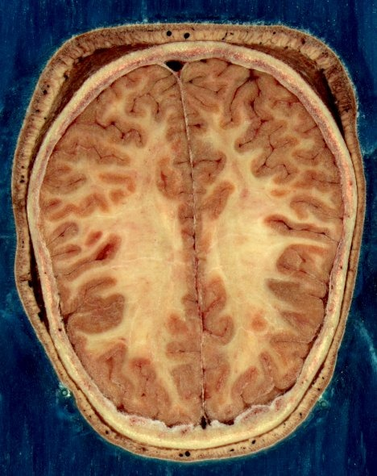

회백질 (Gray Matter)
검수 완료

쉽게 풀면
뇌를 반으로 잘라보면 겉은 회갈색, 속은 하얀색으로 뚜렷하게 색이 갈리는 것을 볼 수 있다. 이 중 회색으로 보이는 부분이 회백질이다. 회백질에는 신경세포의 몸통(세포체)과 서로 정보를 주고받는 시냅스가 빽빽하게 모여 있는데, 이 부분에 미엘린(지방질 절연막)이 거의 없어서 하얀 속살보다 상대적으로 어둡게 보인다. 대뇌겉질 표면, 소뇌 겉질, 그리고 뇌 깊숙이 자리한 기저핵 같은 신경핵들이 대표적인 회백질 부위이다. 반면 신경세포의 긴 축삭 다발이 미엘린으로 감싸여 신호를 빠르게 전달하는 통로 역할을 하는 부분은 하얗게 보이는데, 이것이 백질이다. 쉽게 비유하면 회백질은 정보를 "생각하고 처리하는 공장"이고, 백질은 그 공장들 사이를 잇는 "고속도로"라고 할 수 있다.
왜 중요한가
회백질의 부피, 두께, 밀도는 뇌 영상을 이용한 연구에서 신경세포와 시냅스의 상태를 간접적으로 나타내는 대표적 지표로 쓰여, 정신질환, 신경퇴행성 질환, 정상적인 뇌 발달과 노화를 연구하는 논문에서 널리 측정된다. 특정 뇌 영역의 회백질 변화를 인지 기능이나 행동 지표와 연결지어 살펴보는 방식은 뇌과학과 임상 연구를 잇는 대표적인 접근이어서 여러 하위 분야에서 반복적으로 등장한다.
어디에 있고 어떻게 생겼나
- 회백질(grey matter)은 신경세포체, 신경그물(수상돌기와 무수 축삭), 교세포(별아교세포, 희소돌기아교세포), 시냅스, 모세혈관으로 이루어진다.
- 대뇌에서는 표면의 대뇌피질을 이루고 시상, 기저핵, 중격핵처럼 깊은 곳에도 있다. 소뇌는 소뇌피질과 소뇌 깊은 핵, 뇌줄기는 흑질·적핵·올리브핵·뇌신경핵을 포함한다.
- 척수에서는 앞·뒤·옆 회색 기둥이 H자 모양을 이룬다.
맡은 기능
- 회백질은 세포체가 많고 유수 축삭이 적다. 백질은 세포체가 적고 주로 장거리 유수 축삭으로 이루어져 회백질 영역을 연결하고 신경 신호를 나른다.
- 회색과 흰색의 차이는 주로 미엘린의 흰빛에서 온다. 살아 있는 조직의 회백질은 아주 옅은 회색에 누르스름하거나 불그스름한 빛이 돌며, 이는 모세혈관과 세포체 때문이다.
- 회백질 부피는 약 8세부터 줄기 시작하고 밀도는 청년기 초반까지 오른다. 남성은 부피가 크고 밀도가 낮은 경향이 있다. 백질은 중년에 정점에 이른다.
연구에서 다루는 방식
- 확산텐서영상(DTI) 같은 MRI 기술이 백질 연구를 크게 진전시켜 2007년까지 700편 넘는 논문이 나왔고, 2009년 연구는 저글링 학습과 백질 변화를 연결했다.
- 백질 부피가 작은 것은 주의, 기억, 지능의 결손과 관련된다. 다발성 경화증은 미엘린을 해치고, 알코올 사용 장애는 백질 부피 감소와 연결된다.
논문에서는 이렇게 쓰입니다
실제 논문에서
국내 학술지 논문에서 이 용어가 쓰인 문장을 그대로 옮겼다. 제목·학술지·연도와 원문 링크를 함께 적었다.
“회백질(gray matter)의 양이 많다는 것 또한 주의기능이나 실행기능과 같은 신경인지기능과 결부되어 화이트칼라 범죄자의 성격적 특징을 결정짓는 신경범죄학적 요인으로 분석되었다.”
신경범죄학과 화이트칼라 범죄에 관한 소고(小考), 법조, 2016 · KCI 한국학술지인용색인 · 원문 보기 ↗
“이를 위해 인터넷게임 과사용 집단(n = 18, 평균 연령 22.2 ± 2.0세)과 대조집단(n = 20, 평균 연령 21.2 ± 2.2세)의 고해상도 구조적 T1 영상을 획득하여 집단 간 회백질 부피 차이를 검증하고 성격 특질과의 관련성을 조사하였다.”
인터넷게임 과사용자의 성격 관련 신경해부학적 특질: 부피소-기반 형태 연구, 한국심리학회지:일반, 2017 · KCI 한국학술지인용색인 · 원문 보기 ↗
“또한, UTE MRI는 뇌 이미징에서도 가능성을 보여주며, 백질, 회백질의 조직 특성과 신경퇴행성 질환과 관련된 병리학적 변화를 포착할 수 있다.”
임상에서 초단시간 에코 자기공명영상 기법의 원리와 적용, 한국자기학회지, 2025 · KCI 한국학술지인용색인 · 원문 보기 ↗
예시 문장
아래 예문은 용어의 쓰임을 보이려고 만든 것으로, 실제 논문 문장이 아니다.
이 문장은 뇌 영상을 분석해서 특정 뇌 영역의 회백질 부피(신경세포가 밀집된 조직의 양)를 그룹 간에 비교했고, 그 차이가 우연이 아닐 가능성이 높다는 뜻이다. 회백질 부피는 정신질환이나 노화 연구에서 자주 측정되는 지표이다.
노화 및 치매 연구에서 회백질 부피의 시간에 따른 변화를 인지기능 변화와 함께 추적한 예시이다.
뇌 가소성 연구에서 특정 기술 학습이 해당 뇌 영역의 회백질 구조 변화와 연관됨을 보고한 예시이다.
조금 더 깊게 보면
회백질을 정량화하는 대표적 방법으로는 뇌 전체에 걸쳐 조직 부피를 비교하는 복셀기반형태계측법(VBM), 대뇌겉질의 두께를 표면 단위로 측정하는 피질 두께 분석 등이 있으며, 어떤 방법을 썼는지에 따라 결과 해석이 달라질 수 있다. 회백질의 변화는 신경세포 자체의 증감뿐 아니라 시냅스 밀도, 신경교세포, 혈관 등 여러 요인의 영향을 함께 받을 수 있어, 부피나 두께의 변화만으로 신경세포 수의 변화를 단정하기는 어렵다는 점이 흔히 지적된다.
주의할 점
회백질 부피가 크다고 해서 그 사람의 지능이나 능력이 더 뛰어나다고 단순하게 해석해서는 안 된다. 회백질 부피는 나이, 학습 경험, 측정 방법에 따라 달라질 수 있으며, 정보 전달을 담당하는 백질의 상태도 함께 고려해야 뇌 기능을 온전히 이해할 수 있다.
참고 문헌
- Wikipedia contributors. (n.d.). Grey matter. Wikipedia.
- Wikipedia contributors. (n.d.). White matter. Wikipedia.